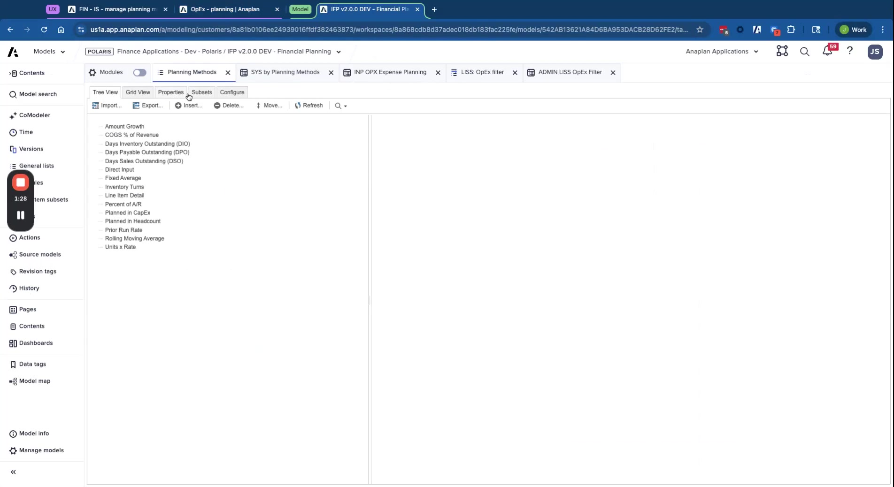

Common Extensions
Custom planning methods, external integrations, and configure vs. extend decisions
Module 4Admin & Extensions20 min
Configure vs. Extend
| Scenario | Approach |
|---|---|
| Need a new planning method | Extend — add to Planning Methods list, configure SYS module, add line items, update LISS |
| Need basic allocations | Configure — built in out of the box |
| Need sophisticated allocations (waterfalls, multi-step) | Extend to Profitability application — integrates with IFP |
| Need more than 8 dimensions | Bespoke model build — cannot configure within IFP hard limit |
| Need CapEx by department | Extend — entity-to-dept mapping in General Admin for simple cases |
| Need employee-level HC detail | Extend to OWP or WFB — both integrate natively with IFP HC |
| Need external revenue planning | Configure — 'In another model → load to FP' option + DAT Margin Planning Import module |
Creating a Custom Planning Method: Headcount × Rate
This example creates a method that drives expense from HC data — eliminating double-entry for headcount-driven expenses.

- Add to Planning Methods list — create new entry with unique code
- Configure in SYS by Planning Methods — set business area (expense/margin/BS), add description (shown as context help to users)
- Add line items to input module:
- Boolean "Is Method in Use?" — controls when calculation runs
- Headcount Amount — formula: actuals → from DAT module; forecast → from HC integration module
- Rate per Head — formula scope = Actuals version (historical calculated; forecast manually entered)
- Adjustment — always manual input
- Final Amount — if not in use → 0; if actuals → actual GL amount; else → HC × Rate + Adjustment
- Apply DCA — hide line items from users when method isn't applicable to the account
- Update LISS — map which line items display to users and which are for the forecast method
- Assign to accounts — change the account's method in FIN – IS – Manage Planning Methods
- Add to Final Amount — include the new method's output in the Final Amount formula
💡 Final Amount Is The Only Output
The Final Amount line item is the only value pulled into downstream modules. All other calculation line items exist only for intermediate computation and don't need summarization turned on.
External Integration Patterns
| Integration | DAT Module | Pattern |
|---|---|---|
| OWP (Operational Workforce Planning) | DAT Headcount Planning Import | OWP → ADO → DAT module → FP calculations |
| Consensus Margin Planning (CMP) | DAT Margin Planning Import | CMP → ADO → DAT module → FP calculations |
| External CapEx system | DAT Capex IS + BS Planning Import | External → ADO → 2 DAT modules → FP calculations |
| Project Planning (PCP) | DAT Project Planning Import | PCP → ADO → DAT module → FP calculations |